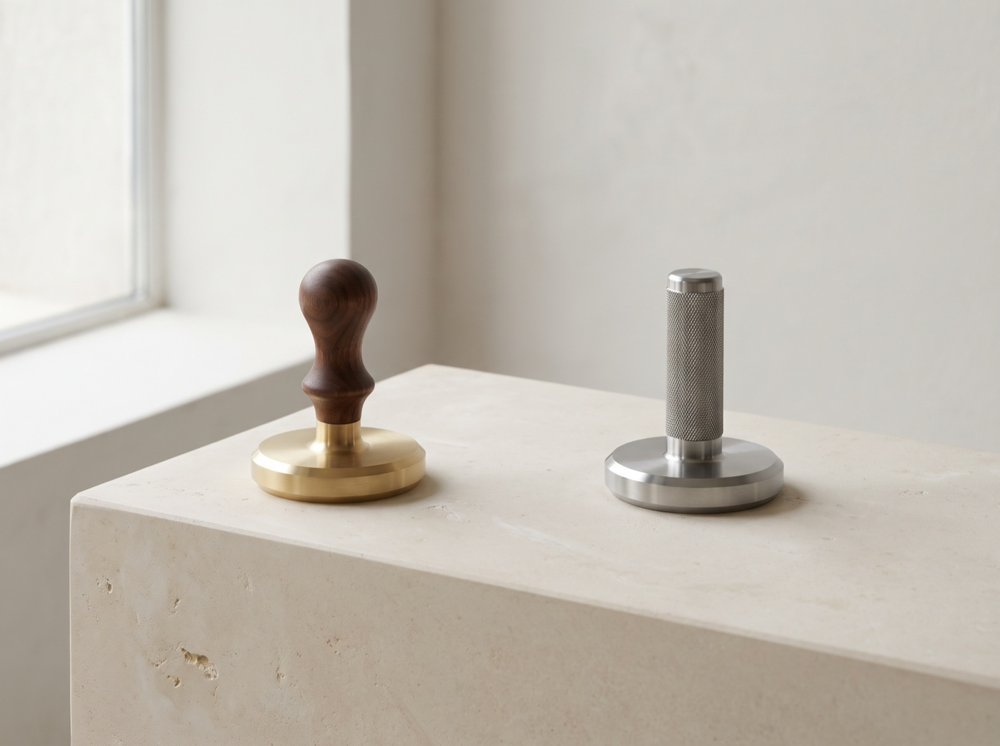

Studio images show the intended design and materials. Photos of 304 production samples, including real impressions on ice and measured relief depth, will be published before orders open.
304 Stainless Steel Cocktail Ice Stamp
Bright, brushed, and built for the dish pit.
Your logo or monogram, deep-relief CNC cut into a 304 stainless steel face. No brass patina to manage and a finish that stays bright through constant commercial washdown, with the same artwork check and proof as our brass stamp.
- 304 (18/8) austenitic stainless contact face, grade confirmed by mill certificate.
- Deep CNC relief, target ≥ 2.8 mm, confirmed in your proof.
- Expect about 4–5 seconds of contact on tempered clear ice.
- M8 thread: add a second custom head to the same handle for $49.
01 Find your size
Face diameterPrices include the +$15 304 steel face. Measure the flat top of your ice, not just the mold size.
02 Finish in hand
HandleThe all-steel option suits bars with strict washdown routines; walnut should not be soaked.
03 Add a second mark
Optional · M8 threadUnscrews from the same handle on an M8 thread. Upload the second artwork in the Studio.
Your proof is confirmed before machining. Secure USD checkout via PayPal or debit/credit card in the Studio, with your estimated ship date shown before payment.
What you’re
actually getting.
Pricing matches the Studio exactly: the brass base price plus $15 for the 304 face, $18 for a solid steel handle and $49 for each extra head. Tolerances and measured relief depth are added here from production samples, not estimated in advance.
| Contact face | 304 austenitic stainless steel (about 18% Cr / 8% Ni) |
|---|---|
| Sizes & prices | 1.5″ / 38.1 mm $84 · 2.0″ / 50.8 mm $104 (recommended) · 2.5″ / 63.5 mm $124 |
| Handle | Turned walnut (included) or solid 304 stainless (+$18) |
| Extra head | Second interchangeable custom head, M8 thread, +$49 |
| Engraving | Deep CNC relief, target ≥ 2.8 mm, confirmed in your proof |
| Typical contact | About 4–5 seconds on tempered clear ice |
| Intended use | Brief contact with plain water ice, before the drink is poured |
| Approval | Digital proof approved before machining |
304 stainless or
lead-free brass?
Neither is “better”. They trade speed for washdown ease and warmth for brightness. Here is the trade-off, plainly.
304 stainless steel
- Finish
- Bright brushed steel that stays bright. No brass patina.
- Care
- Commercial-bar washdown ease: wash, sanitize, dry, repeat.
- On ice
- Slower heat transfer: plan on about 4–5 seconds of melt dwell.
- Price
- $84 / $104 / $124 (brass + $15)
Bismuth lead-free brass
- Finish
- Warm brass that develops an heirloom patina with use.
- Care
- Mild soap, rinse, dry. Avoid acidic cleaners on the face.
- On ice
- Faster heat transfer: about 2–3 seconds of melt dwell.
- Price
- $69 / $89 / $109
| Property | 304 stainless steel | Bismuth lead-free brass |
|---|---|---|
| Appearance over time | Stays bright and brushed | Warms to a patina |
| Thermal conductivity | Lower; slower melt | Higher; faster melt |
| Starting contact time | About 4–5 s | About 2–3 s |
| Lead as an alloying element | No | No; kept to ~0.0022% Pb in our target spec |
| Acidic contact | Generally more resistant; check finish | Copper-alloy limits apply |
| Best fit | High-volume bars, strict washdown | Home bars, gifts, guest-facing theatre |
A little longer on the ice,
a lot easier at close.
Start with a clean, room-temperature stamp and a tempered, flat-topped clear cube. Press straight down for about 4–5 seconds, then lift straight up. Steel rewards patience rather than pressure. Don’t heat it with a flame, and don’t leave it in the ice well between drinks.
After service, wash with mild detergent, rinse, sanitize with a method compatible with stainless steel and your local food-safety rules, and dry thoroughly. Follow the care instructions supplied with your stamp; if you chose walnut, don’t soak the handle.
Steel,
explained.
It is different. 304 stainless has a bright brushed finish, develops no brass patina and is easy to wash and sanitize in a commercial bar. Lead-free brass conducts heat faster, marking tempered ice in roughly 2–3 seconds versus about 4–5 seconds for steel, and ages to a warm patina. Choose steel for washdown and durability, brass for speed and warmth.
Start with about 4–5 seconds of straight-down contact using a clean, room-temperature stamp on tempered, flat-topped clear ice. Ice temperature, artwork area and surface water change the result, so practise on a spare cube first. Do not heat the stamp with a flame.
The 304 face adds $15 to the brass price: 1.5-inch $84, 2-inch $104 and 2.5-inch $124. A solid 304 stainless handle is +$18, and a second interchangeable custom head is +$49.
Follow the care instructions supplied with your stamp. Wash with mild detergent, rinse, sanitize with a method compatible with stainless steel and your local food-safety rules, and dry thoroughly. A walnut handle should not be soaked.
Lead is not an alloying element in 304 stainless steel. The grade is still confirmed by a mill certificate, and surface finish and residues matter. Documentation is published before orders open. For the wider picture, read Lead-Free Brass, C36000, and What to Ask Before You Buy.